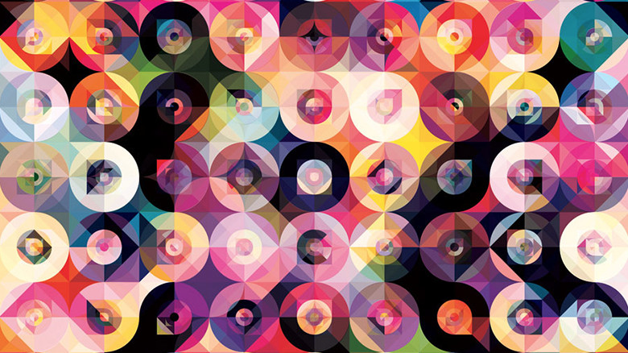

minimal

Andy Gilmore
http://www.agilmore.com/-どんな人
デジタルで作品を作っています。平面を細かく分割して、配色で綺麗な画面をみせる作品を多く作っています。グラデーションを使ったり、コントラストを強めたりなど、色の使い方がとても上手なアーティストです。
-解説
この画面はまず正方形を9つに分割したグリッドで成り立っています。その正方形の中には円がひとつ、さらに50%縮小で一つ、またもうひとつ、斜めのグリッドも…….書いてんのかわけがわからなくなってきましたが、とりあえず単純な図形を何レイヤーも重ねると複雑な模様がうまれます。普通は雑然として汚い画面になりがちですが、そこは神業で配色のバランスをみごとに保っています。色彩についての造詣が深くなければできない作品です。
-好きなところ
同じ明度、彩度にととのえて色相だけ変えている部分や、黒でしっかり抜いている部分のバランスがよく、配色のバランスがとても参考になります。